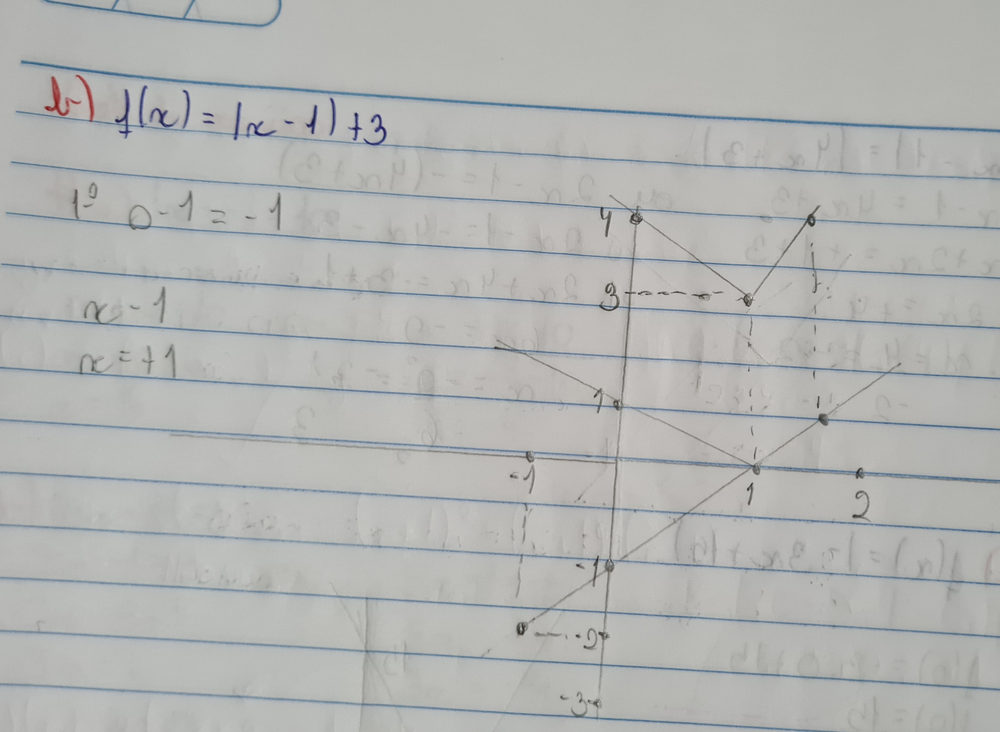

Minhas principais dificuldades nesse segundo trimestre foram as funções modulares e as funções quadráticas.
Eu fique bastante "perdido" em questão da construção de gráficos dessas funções pois para mim era várias contas ate ter todos os resultados para por no gráfico. Mas com ajuda da professora consegui no final pegar bem certinho a construção pois para construir o gráfico de uma função modular, sempre podemos construir o gráfico da função que está dentro do módulo primeiro e, depois, refletir a parte com y negativo para cima.
Aqui a baixo vai um exemplo de atividade realizada por mim já corrigida, onde apaguei várias vezes e muito esforço até conseguir fazer sozinho:
Eu usei vários vídeos de professores do youtube para aprender fazer e compreender por total esse conteúdo, um dos exemplo de vídeo é:
Essa é outra parte do conteúdo que não consegui acompanhar muito bem também, novamente fiquei "perdido" na
construção dos gráficos mas nessa parte consegui entender de uma maneira mais rápida, para a construção desse
tipo de gráfico precisava seguir passos mais especificamente esses quatro:
1º) Analisar a concavidade.
2º) Calcular as raízes reais, se existirem, ou seja, f(x) = 0.
3º) Determinar o ponto de interseção com o eixo y, ou seja,
f(0).
4º) Calcular as coordenadas do vértice.
Acho que fiquei mais perdido no 4º passo onde era pra achar os vétices pois havia 2 formas e eu não conseguia me
adaptar com nenhuma. Ate que depois de muito exercício feito me adaptei melhor com a Xv = X1+X2/2 e Yv = f(Xv).
Esse exemplo acima é um exercício realizado em aula presencial já corrigido. Errei eles várias vezes mas no fim de tudo deu certo.